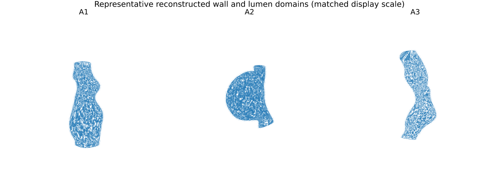
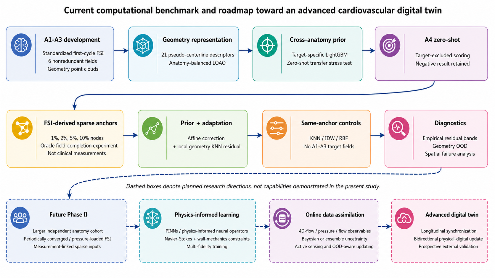
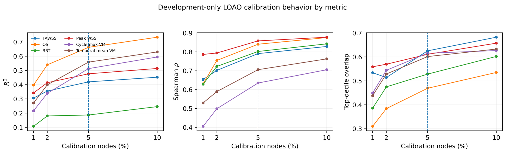
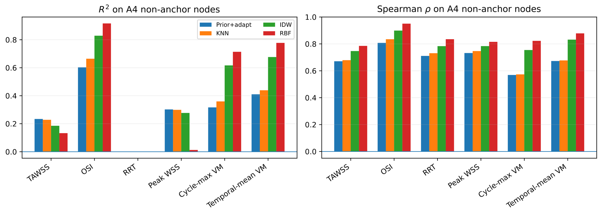
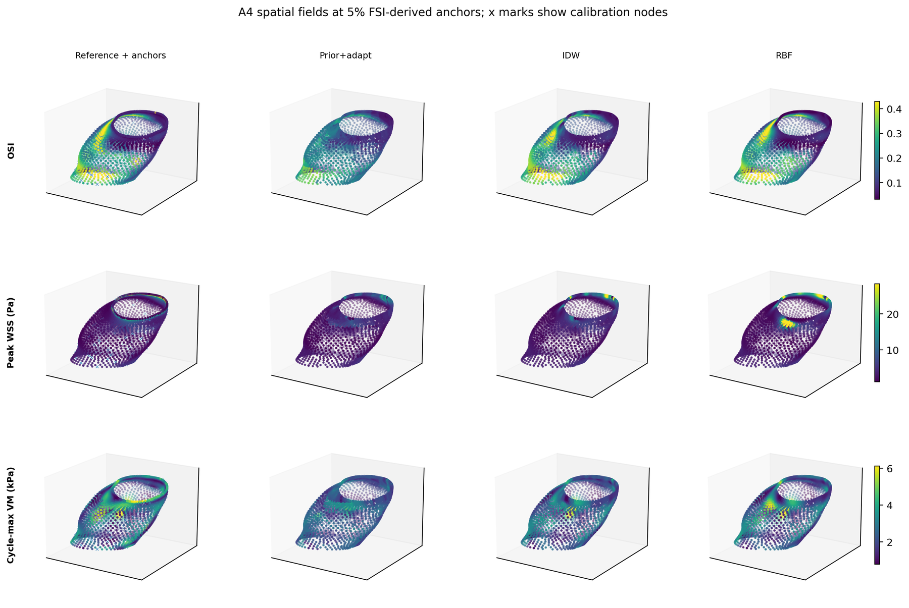
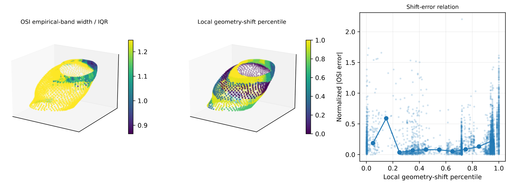

Paper
Surrogate credibility for fluid-structure interaction (FSI) requires distinguishing transfer across independent anatomies from interpolation within an already sampled surface. Four de-identified human aortic models from the Vascular Model Repository were reconstructed into separate lumen and nominal 1.5-mm wall domains and analyzed under matched first-cycle two-way FSI. A geometry-only LightGBM prior, selected by leave-one-anatomy-out development on three anatomies, was zero-shot evaluated on a fourth, then probed with a post-zero-shot sparse field-completion case study over six targets. Zero-shot transfer was poor across all targets. At a five-percent anchor level (203 anchors, 3,852 evaluation nodes), prior-plus-adaptation reached an oscillatory shear index (OSI) R² of 0.603. However, same-anchor controls tuned only on the three development anatomies were stronger for several outcomes: inverse-distance weighting reached R² = 0.829 (OSI), 0.617 (peak von Mises stress), 0.676 (mean stress); radial basis function interpolation reached 0.917, 0.714, 0.778. Sparse within-anatomy labels thus support field completion, but this four-anatomy cohort gives no evidence the cross-anatomy prior adds value beyond direct interpolation. We frame this as a first computational stage toward a measurement-linked digital twin: the surrogate/update layer is evaluated here, while larger cohorts, converged FSI, measurable patient-side inputs, and physics-informed learning remain future work, not a claim of a complete clinical twin.
Materials and Methods
Four VMR aortic models were reconstructed into separate lumen and wall domains under a deterministic CAD workflow, then solved with matched two-way FSI assumptions.

Figure 1. Reconstructed geometries for development anatomies A1-A3, matched display scale after principal-axis alignment. Opaque: blood-lumen/fluid domain; translucent: CATIA-generated wall domain. Renderings, not patient photographs.
| Metric | A1 | A2 | A3 | A4 |
|---|---|---|---|---|
| Wall nodes | 8191 | 6800 | 3203 | 4055 |
| Tetrahedra | 278889 | 213130 | 415816 | 128656 |
| Min tet. quality | .145 | .077 | .121 | .144 |
| Pseudo-centerline length (mm) | 128.09 | 96.21 | 93.69 | 85.40 |
| Tortuosity (geom.) | 1.226 | 1.256 | 1.138 | 1.346 |
| Mean TAWSS (Pa) | .964 | 1.218 | .699 | 1.144 |
| P95 TAWSS (Pa) | 2.380 | 4.559 | 1.094 | 2.878 |
| Global saved-state peak WSS (Pa) | 74.73 | 134.27 | 33.31 | 101.79 |
| P95 saved-state peak WSS (Pa) | 14.14 | 27.41 | 5.04 | 15.55 |
| Mean saved-state max VM (kPa) | 3.916 | 2.472 | 3.140 | 2.518 |
| P95 saved-state max VM (kPa) | 10.55 | 4.76 | 5.92 | 4.87 |
Table 1. Computational anatomy and FSI summary. Pseudo-centerline length/tortuosity are geometry-descriptor values, not clinical measurements.
Study Design
Development uses leave-one-anatomy-out on A1-A3. Anatomy 4 is held out for zero-shot transfer and a post-zero-shot sparse-calibration case study.

Figure 2. Evaluation workflow and research roadmap. Solid boxes: capabilities evaluated here. Dashed boxes: planned extensions, not current results.
Results
Zero-shot transfer is weak. With 5% anchors on anatomy 4, prior-plus-adaptation recovers useful structure for some targets (OSI R² = 0.603), but same-anchor baselines remain critical controls.

Figure 3. Development-only LOAO calibration behavior for the six primary targets (R², Spearman ρ, top-decile overlap). Vertical line: preselected 5% setting.
| Target | R² | MAE | RMSE | ρ | Top10 | Emp. band |
|---|---|---|---|---|---|---|
| TAWSS (Pa) | .234 | .408 | 1.179 | .671 | .587 | .884 |
| OSI | .603 | .0438 | .0645 | .807 | .668 | .914 |
| RRT (Pa⁻¹) | .000 | 5.959 | 287.697 | .711 | .579 | .900 |
| Saved-state peak WSS (Pa) | .302 | 2.035 | 5.835 | .732 | .605 | .894 |
| Saved-state max VM (kPa) | .317 | .729 | 1.029 | .569 | .506 | .903 |
| Temporal-mean VM (kPa) | .410 | .170 | .239 | .673 | .506 | .901 |
Table 2. Prior-plus-adaptation performance on anatomy 4, 5% setting (non-anchor nodes only).
Results: Same-Anchor Controls
Direct IDW/RBF interpolation with the same anchors often matches or beats prior-plus-adaptation. Sparse labels help, but credit must not go automatically to cross-anatomy transfer.

Figure 4. Same-anchor controls on anatomy 4 at 5% calibration. Direct IDW/RBF interpolation frequently equal or exceed prior-plus-adaptation.
| Target | Prior+adapt | KNN anchors | IDW anchors | RBF anchors | ||||
|---|---|---|---|---|---|---|---|---|
| R² | ρ | R² | ρ | R² | ρ | R² | ρ | |
| TAWSS | .234 | .671 | .228 | .679 | .185 | .747 | .133 | .785 |
| OSI | .603 | .807 | .664 | .835 | .829 | .899 | .917 | .950 |
| RRT | .000 | .711 | .000 | .731 | .000 | .783 | .000 | .835 |
| Saved-state peak WSS | .302 | .732 | .299 | .747 | .277 | .784 | .013 | .815 |
| Saved-state max VM | .317 | .569 | .359 | .573 | .617 | .754 | .714 | .823 |
| Temporal-mean VM | .410 | .673 | .439 | .677 | .676 | .832 | .778 | .878 |
Table 3. Anatomy-4 reconstruction at 5% calibration: prior-plus-adaptation vs. direct baselines. RRT R² shown as 0.000 to avoid negative-zero formatting.
Results: Spatial Fields
Spatial maps reinforce the table findings: RBF reconstructs OSI and maximum VM well, while peak WSS remains harder and unconstrained RBF can produce a few out-of-range OSI values.

Figure 5. Anatomy-4 non-anchor spatial fields at 5% calibration. Rows: OSI, saved-state peak WSS, saved-state maximum VM stress. Columns: FSI reference, prior-plus-adaptation, IDW, RBF; matched display limits per row.
Results: Diagnostics
Development-calibrated residual bands and local geometry-shift scores are diagnostic markers, not guarantees of reconstruction error.

Figure 6. Secondary diagnostics on non-anchor anatomy-4 nodes: empirical residual-band width for OSI (normalized by development IQR) and local geometry-shift percentile. Not clinically calibrated.
@misc{nourbakhsh2026aorticfsisurrogates,
title={Cross-Anatomy Transfer Versus Sparse Interpolation in Digital-Twin-Oriented Aortic Fluid-Structure Interaction Surrogates},
author={Ali Nourbakhsh and Mohammad Reza Niroomand and Erfan Nourbakhsh},
year={2026},
eprint={2609.16322},
archivePrefix={arXiv},
primaryClass={cs.AI},
url={https://arxiv.org/abs/2609.16322},
note={Under review at ICBME 2026},
}